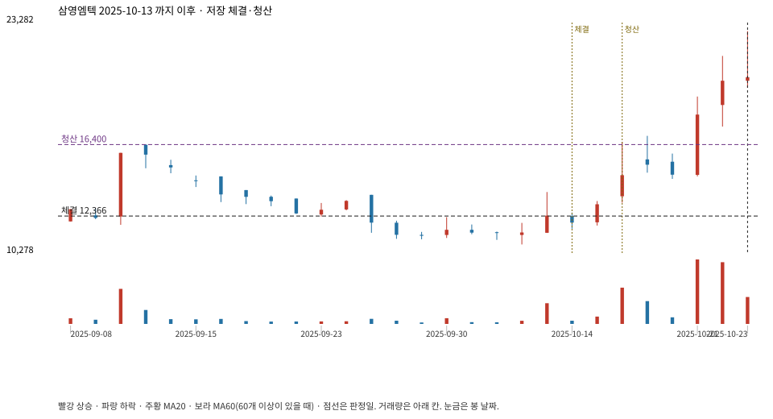

계좌를 다시 돌리지 않았다. 아래는 저장된 주문·체결·청산·비용·손익이다.

{
"case_id": "a4e472969bd9f55d",
"status": "closed",
"trade": {
"symbol": "054540.KQ",
"signal_date": "2025-10-13",
"quantity": 536,
"entry": 12390,
"stop": 10555,
"target": 16400,
"planned_risk": 998684.4312599998,
"reserved_cash": 6647681.039999999,
"fill": {
"date": "2025-10-14",
"price": 12366.179999999998,
"fee": 6628.27248
},
"exit": {
"date": "2025-10-16",
"price": 16400,
"reason": "target",
"net_pnl": 2146708.847520001,
"ambiguous_bar": false
}
},
"cost": "research fee 10bp each side, slippage 5bp; amounts below are the stored ledger, not a new run",
"chart": "c\/a4e472969bd9f55d.svg"
}